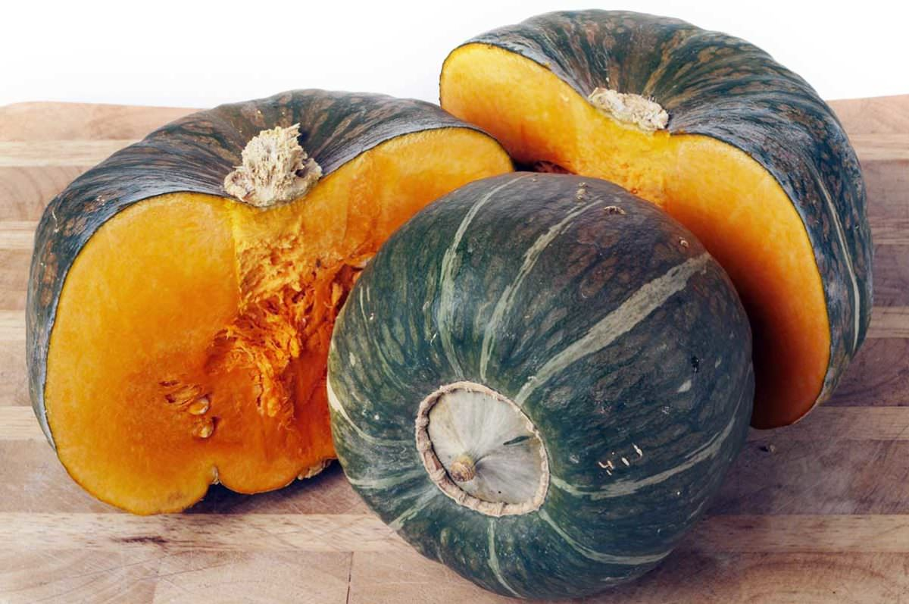
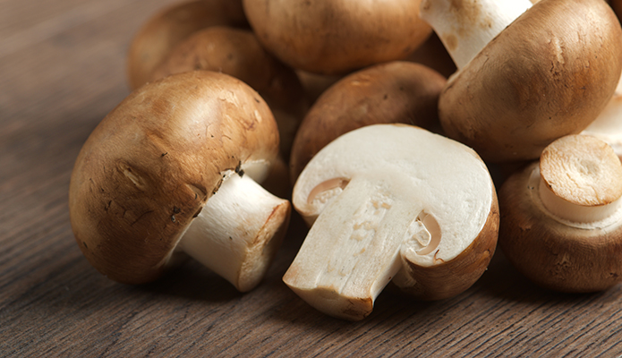
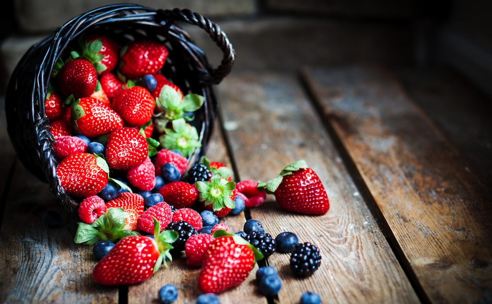
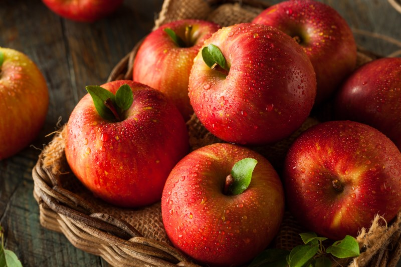
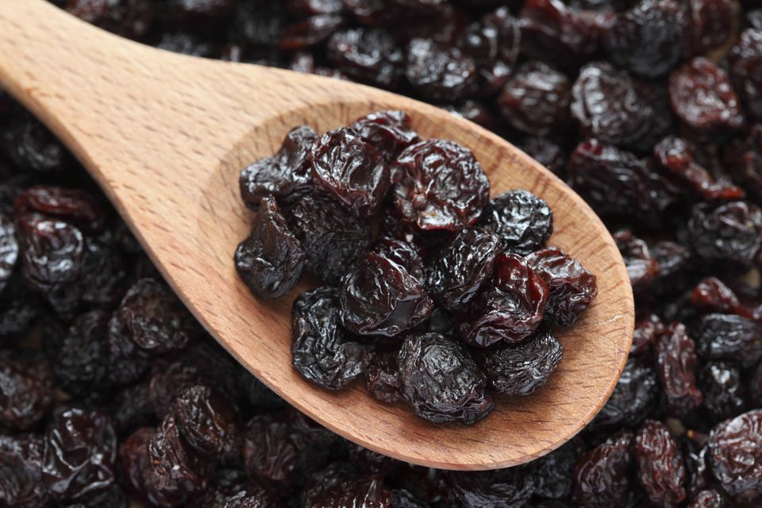
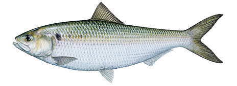

| Healthy Foods | Image | Description |
|---|---|---|
| Squash |  |
try the many varieties of squash for a healthy, filling, high-fiber meal. You can simply cut an acorn squash in half and place it flesh side down in a pan of water. Cook in a 350 degree oven for 30 minutes and serve with unsweetened applebutter. Butternut squash can be added to soups to increase fiber and niacin as well! |
| Mushrooms |  |
these fungi have almost no calories and offer a powerhouse of potassium. |
| Garlic and onions |  |
These tasty additions to recipes are thought to help reduce bacteria in the body and support a healthy cardiovascular system. |
| Bananas | easy for seniors to eat and offer great potassium and fiber to fill up when just needing a snack or having a sweet craving. |
|
| Berries |  |
These are also often heavily sprayed for pesticides. Shop for organic varieties when possible and/or wash thoroughly. Berries are powerful anti-oxidents and offer a good supply of potassium, calcium and magnesium. |
| Apples |  |
They are best when eaten with the skin on –
but get the organic variety to avoid pesticides. Apples contain a lot of pectin which helps to prevent cholesterol buildup in the lining of blood vessel walls. |
| Raisins |  |
These guys actually help reduce bacteria in your mouth that can lead to cavities and gum disease. Along with raisins, many types of dried fruits offer a good source of iron. |
| Green Tea |  |
Packed with phytochemicals thought to be good for preventing cancer and heart disease, Green Tea is a wonderful replacement for coffee. |
| Water for Frying |  |
Yes – you can sauté vegetables in water for the basis of soups and other recipes. You won’t be able to tell the difference between carrots and onions sauted in water as opposed to butter if you are doing it for part of a recipe! |
| Fish |  |
White fish and tuna are a good source of animal protein without the heavy saturated fats in other meats and provide brain-and-heart healthy omega-3 fatty acids. |